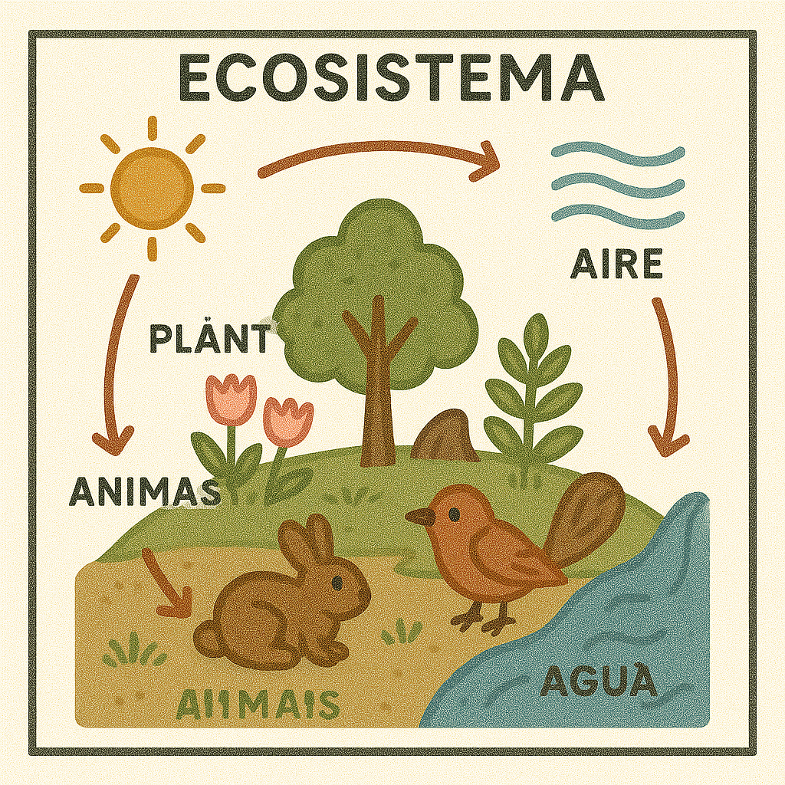
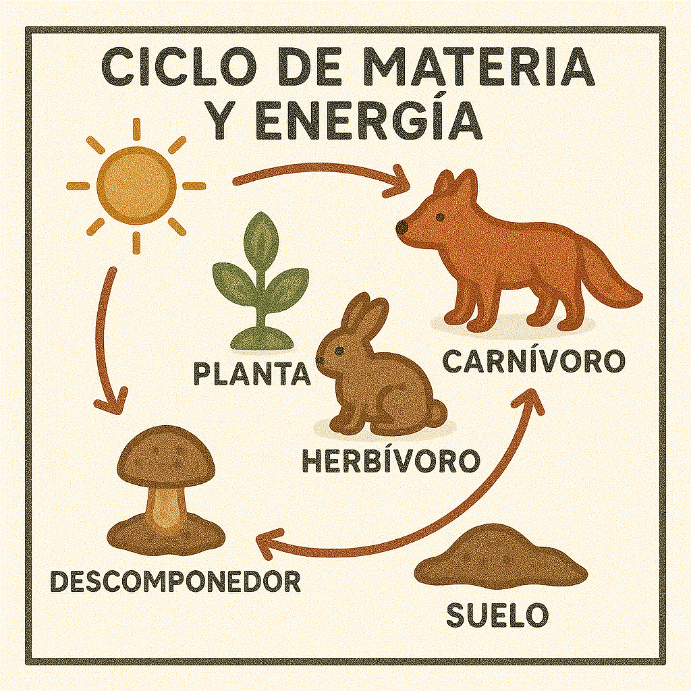
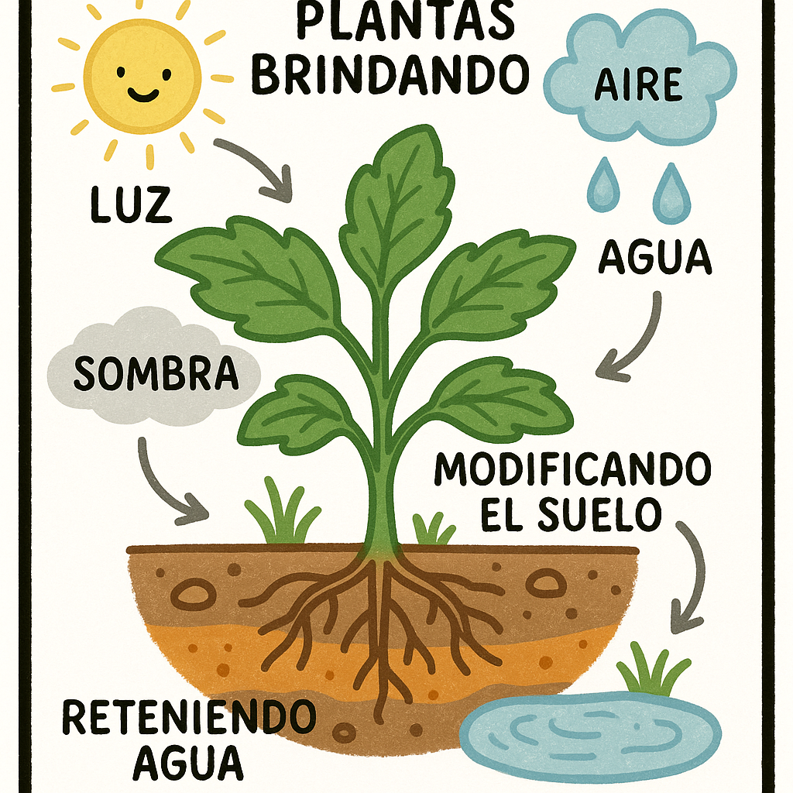

⬅ Volver a Ciencias Naturales
Intercambios en el ecosistema
¿Por qué son importantes los intercambios?
Los seres vivos no habitan los ambientes de forma aislada. Interactúan entre sí y con los elementos no vivos (factores abióticos). Gracias a estas interacciones se mantiene el equilibrio del ecosistema.
Interacciones en el medio
Todos los organismos necesitan energía, nutrientes, refugio y condiciones adecuadas para vivir. Todo esto lo obtienen del ambiente y de otros seres vivos.

Interacciones entre seres vivos
Ejemplo: Las plantas usan la luz solar para hacer fotosíntesis. Luego, los herbívoros se alimentan de las plantas, los carnívoros se alimentan de los herbívoros y, cuando mueren, los descomponedores transforman sus restos y devuelven nutrientes al suelo.
Esto forma un ciclo continuo de materiales y energía.

Interacciones con factores abióticos
Las plantas brindan sombra y refugio, modifican el suelo y retienen agua. Todos los seres vivos respiran, generando intercambio de gases como oxígeno y dióxido de carbono. Algunos organismos mueven el agua o el aire, modificando su temperatura o composición.

Concepto clave
Los ecosistemas funcionan como sistemas abiertos: hay un intercambio constante entre los factores bióticos (seres vivos) y abióticos (suelo, agua, aire, temperatura, luz).
Cuadro sinóptico: Intercambios en el ecosistema
graph TD
A["Ecosistema (sistema abierto)"]
A --> B["Factores bióticos (seres vivos)"]
A --> C["Factores abióticos (agua, suelo, aire, luz, temperatura)"]
B --> D["Interacciones entre seres vivos"]
D --> E["Plantas hacen fotosíntesis"]
D --> F["Herbívoros comen plantas"]
D --> G["Carnívoros comen herbívoros"]
D --> H["Descomponedores reciclan materia"]
B --> I["Interacciones con abióticos"]
I --> J["Respiran (intercambio de gases)"]
I --> K["Usan agua y minerales"]
I --> L["Modifican el suelo y el ambiente"]
C --> M["Proveen energía y condiciones"]
M --> N["Luz solar para plantas"]
M --> O["Agua para todos"]
M --> P["Temperatura y aire"]